Goals: Learn to fit & interpret linear mixed effects models in R
Useful link comparing different lme tools: https://bbolker.github.io/mixedmodels-misc/glmmFAQ.html
A nice example using chicken growth data: https://terpconnect.umd.edu/~egurarie/teaching/Biol709/Topic3/Lecture16_MixedEffectsModels.html
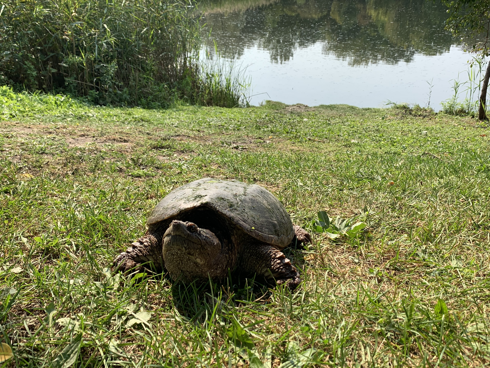
The study was of mercury (Hg) contamination in snapping turtles around several watersheds in central New York State. Multiple (but very variable) numbers of indvidual turtles were captured and teo-clips taken and analyzed, in several different types of water bodies.
Hypotheses going in to the study were that Hg concentrations would be greater for larger animals, greater for males than females (which shed Hg when laying eggs), greater in more urban or contaminated settings, perhaps may depend on the amount of open water or wetland in the water bodies as indicators of trophic depth.
Here are the first few rows of the data:
require(plyr)
require(rmarkdown)
turtles <- read.csv("data/Analyzed_turtle_toenails_R_v5.csv") |>
subset(sex != "")
head(turtles)## sort.ID study Site_type Waterbody Waterbody_Type turtle.id Site
## 1 443 GE Seneca River Onondaga Lake Contaminated SR-CS-1 SRN3
## 2 444 GE Seneca River Onondaga Lake Contaminated SR-CS-2 SRN5
## 3 445 GE Seneca River Onondaga Lake Contaminated SR-CS-3 SRS2
## 4 446 GE Seneca River Onondaga Lake Contaminated SR-CS-4 SRS3
## 5 447 GE Seneca River Onondaga Lake Contaminated SR-CS-5 SRS3
## 6 472 GE Seneca River Onondaga Lake Contaminated SR-CS-6 SRN2
## Lat Lon Wetland_area Wetland_area_ha Open_water_area
## 1 43.13287 -76.24400 24921900 2492.190 1.2e+07
## 2 43.13704 -76.23917 24838689 2483.869 1.2e+07
## 3 43.12300 -76.26718 24838689 2483.869 1.2e+07
## 4 43.12449 -76.26969 24838689 2483.869 1.2e+07
## 5 43.12449 -76.26969 24838689 2483.869 1.2e+07
## 6 43.13120 -76.24620 24838689 2483.869 1.2e+07
## Open_water_area_ha Open_water_to_wetland nail_code date
## 1 1200 0.4815042 Yes 9/9/09
## 2 1200 0.4831173 Yes 9/9/09
## 3 1200 0.4831173 Yes 9/9/09
## 4 1200 0.4831173 Yes 9/9/09
## 5 1200 0.4831173 Yes 9/9/09
## 6 1200 0.4831173 Yes 9/10/09
## species sex nail.sample.confirmed. mass_g photographed.
## 1 Chelydra serpentina M Y 0.3794 Y
## 2 Chelydra serpentina M Y 0.3137 Y
## 3 Chelydra serpentina M Y 0.2689 Y
## 4 Chelydra serpentina M Y 0.2921 Y
## 5 Chelydra serpentina F Y 0.0826 Y
## 6 Chelydra serpentina M Y 0.3367 Y
## nail_length_mm nail_area_mm2 homgenized. THg_ng_g THg_ppm carapace_length
## 1 NA NA Y 8833 8.83 345
## 2 NA NA Y 13397 13.40 362
## 3 NA NA Y 1224 1.22 335
## 4 NA NA Y 6997 7.00 390
## 5 NA NA Y 2147 2.15 262
## 6 NA NA Y 9736 9.74 377
## carapace_length_cm plastron_length plastron_length_cm weight_kg
## 1 34.5 248 24.8 9.16
## 2 36.2 258 25.8 10.95
## 3 33.5 233 23.3 8.80
## 4 39.0 297 29.7 15.64
## 5 26.2 203 20.3 4.82
## 6 37.7 NA NA 13.98Mapping collection sites of turtles in Onondaga and Cayuga counties:
require(sf)
turtles.sf <- st_as_sf(turtles, coords = c("Lon","Lat"), crs = 4326)
require(mapview)
mapview(turtles.sf[,"Waterbody_Type"])is Mercury Concentration - parts per million:
summary(turtles$THg_ppm)## Min. 1st Qu. Median Mean 3rd Qu. Max. NA's
## 0.090 0.610 1.410 2.092 2.470 16.350 8This is highly skewed - we’ll get better behavior with a log-transform (this is a common practice for Hg concentrations):
hist(log(turtles$THg_ppm), breaks = 20)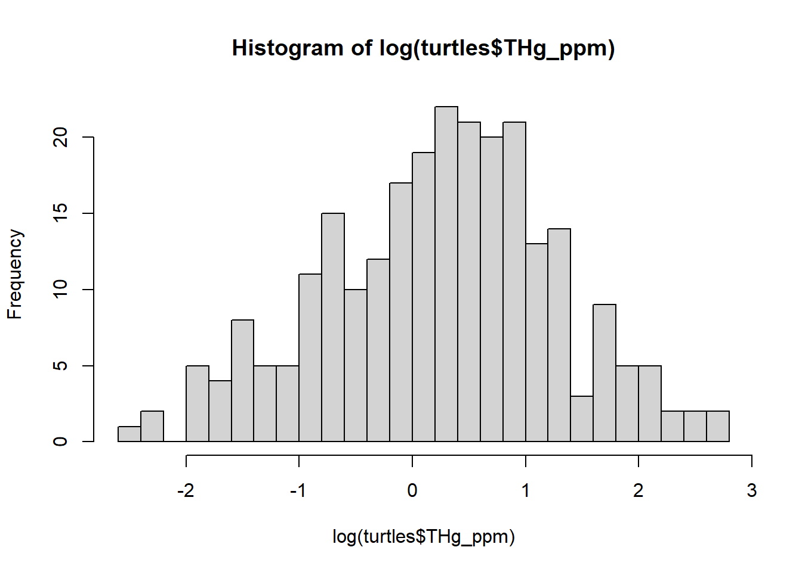
Several different predictors of interest:
require(ggplot2)
ggplot(turtles,
aes(carapace_length_cm, log(THg_ppm), col = Waterbody_Type)) +
geom_point() + geom_smooth(method = "lm") +
facet_wrap(.~sex) + ggtitle("Carapace Length")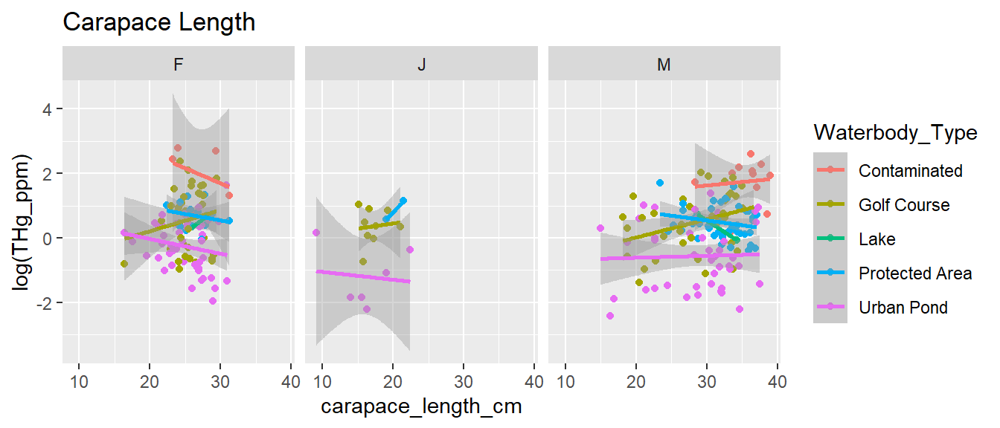
ggplot(turtles,
aes(log(Wetland_area), log(THg_ppm), col = Waterbody_Type)) +
geom_point() + geom_smooth(method = "lm") +
facet_wrap(.~sex) + ggtitle("Wetland Area")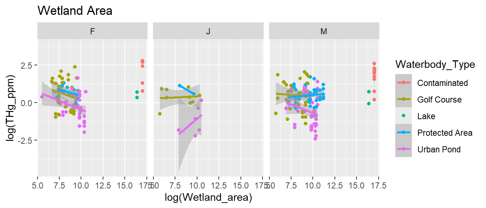
ggplot(turtles,
aes(log(Open_water_area), log(THg_ppm), col = Waterbody_Type)) +
geom_point() + geom_smooth(method = "lm") +
facet_wrap(.~sex) + ggtitle("Open water Area")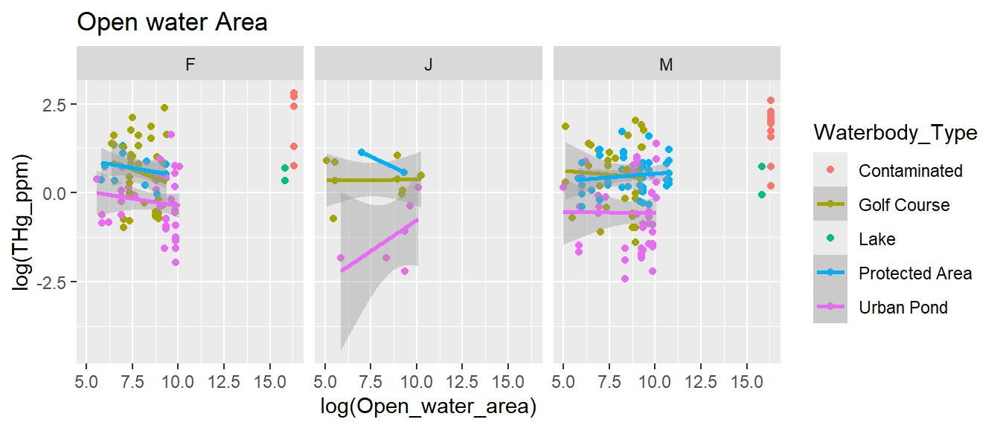
with(turtles, table(Waterbody_Type))## Waterbody_Type
## Contaminated Golf Course Lake Protected Area Urban Pond
## 16 82 4 62 97table(turtles$Waterbody_Type)
with(turtles, lm(carapace_length ~ plastron_length)) |> plot()
with(turtles, plot(carapace_length ~ plastron_length))In this short analysis we will look at:
Q1: Do waterbody characteristics (wetland area and open water area) impact mercury exposure in turtles?
Q2: Are biological characteristics (sex and carapace length) predictors of mercury concentration in turtles?
Goals: compare fixed-effects (lm) & mixed effects models (lmer)
Model comparisons
Compare a bunch of models:
formulae <- list(
M0 = log(THg_ppm) ~ 1,
M1 = log(THg_ppm) ~ carapace_length,
M2 = log(THg_ppm) ~ carapace_length + log(Open_water_area),
M3 = log(THg_ppm) ~ carapace_length * sex,
M4 = log(THg_ppm) ~ carapace_length + sex,
M5 = log(THg_ppm) ~ carapace_length + log(Open_water_area) + sex,
M6 = log(THg_ppm) ~ (carapace_length + log(Open_water_area)) * sex,
M7 = log(THg_ppm) ~ log(Open_water_area) * sex
)Build an AIC table by hand:
require(plyr)
my_lms <- llply(formulae,
function(f) lm(f, data = turtles))
data.frame(as.character(formulae), ldply(my_lms, AIC))## as.character.formulae. .id V1
## 1 log(THg_ppm) ~ 1 M0 736.0155
## 2 log(THg_ppm) ~ carapace_length M1 728.2779
## 3 log(THg_ppm) ~ carapace_length + log(Open_water_area) M2 719.0779
## 4 log(THg_ppm) ~ carapace_length * sex M3 732.0917
## 5 log(THg_ppm) ~ carapace_length + sex M4 729.2313
## 6 log(THg_ppm) ~ carapace_length + log(Open_water_area) + sex M5 720.3498
## 7 log(THg_ppm) ~ (carapace_length + log(Open_water_area)) * sex M6 725.9366
## 8 log(THg_ppm) ~ log(Open_water_area) * sex M7 725.6957AIC (Akaike information criterion) evaluates how well a model fits the data. A smaller AIC indicates a better fit for the model. The best models based on AIC are M2 and and M5. Models with interactions had poor fits and relatively high AICs. Article on model selection: https://iowabiostat.github.io/research-highlights/joe/Cavanaugh_Neath_2019.pdf
Much of this can be done with the model averaging package:
MuMIn:
require(MuMIn)First - build a model that includes all the effects you’re interested in. But to do that, you have to make sure there are no missing data:
turtles_tidy <- turtles[,c("THg_ppm", "carapace_length_cm",
"Open_water_area_ha", "sex",
"Site", "Waterbody_Type")] |> na.omit()
big_lm <- lm(log(THg_ppm) ~ carapace_length_cm * log(Open_water_area_ha) * sex,
data = turtles_tidy, na.action = na.fail)Next - run the “dredge” command. It’s fast (for lm) and
goes through every combination / iteration of parameters, ranks them (by
a slight AIC variant called “corrected AIC” - or AICc - details
unimportant) and also calculates “model weights”. This is an efficient
way to explore - in a regression - the contribution of various factors
and their potential interactions. The output
big_lm_dredge <- dredge(big_lm)
big_lm_dredge## Global model call: lm(formula = log(THg_ppm) ~ carapace_length_cm * log(Open_water_area_ha) *
## sex, data = turtles_tidy, na.action = na.fail)
## ---
## Model selection table
## (Int) crp_lng_cm log(Opn_wtr_are_ha) sex crp_lng_cm:log(Opn_wtr_are_ha)
## 4 -0.41430 0.024690 0.08705
## 12 -0.44880 0.025060 -0.07681 0.005444
## 8 -0.54980 0.034410 0.08546 +
## 16 -0.54430 0.033500 -0.09479 + 0.005996
## 3 0.26640 0.10230
## 24 0.24420 0.003232 0.08677 +
## 40 -0.49340 0.031910 0.06798 +
## 7 0.33210 0.10070 +
## 32 0.14050 0.006683 -0.07555 + 0.005395
## 48 -0.52510 0.032890 -0.05919 + 0.004825
## 39 0.32130 0.07421 +
## 56 0.19430 0.004976 0.07324 +
## 128 0.24800 0.003419 0.33370 + -0.009888
## 2 -0.72120 0.035150
## 64 0.16750 0.005753 -0.05668 + 0.004932
## 6 -0.88920 0.046370 +
## 22 -0.07581 0.014420 +
## 1 0.24300
## 5 0.29110 +
## crp_lng_cm:sex log(Opn_wtr_are_ha):sex crp_lng_cm:log(Opn_wtr_are_ha):sex
## 4
## 12
## 8
## 16
## 3
## 24 +
## 40 +
## 7
## 32 +
## 48 +
## 39 +
## 56 + +
## 128 + + +
## 2
## 64 + +
## 6
## 22 +
## 1
## 5
## df logLik AICc delta weight
## 4 4 -355.539 719.2 0.00 0.289
## 12 5 -354.793 719.8 0.59 0.216
## 8 6 -354.175 720.7 1.45 0.140
## 16 7 -353.292 721.0 1.80 0.118
## 3 3 -357.886 721.9 2.63 0.078
## 24 8 -353.457 723.5 4.26 0.034
## 40 8 -353.466 723.5 4.28 0.034
## 7 5 -356.988 724.2 4.98 0.024
## 32 9 -352.750 724.2 5.00 0.024
## 48 9 -353.195 725.1 5.89 0.015
## 39 7 -355.848 726.2 6.91 0.009
## 56 10 -352.968 726.8 7.61 0.006
## 128 13 -349.935 727.4 8.15 0.005
## 2 3 -361.139 728.4 9.14 0.003
## 64 11 -352.685 728.5 9.23 0.003
## 6 5 -359.616 729.5 10.24 0.002
## 22 7 -359.046 732.5 13.31 0.000
## 1 2 -366.008 736.1 16.82 0.000
## 5 4 -364.786 737.7 18.49 0.000
## Models ranked by AICc(x)Perhaps better to visualize:
plot(big_lm_dredge)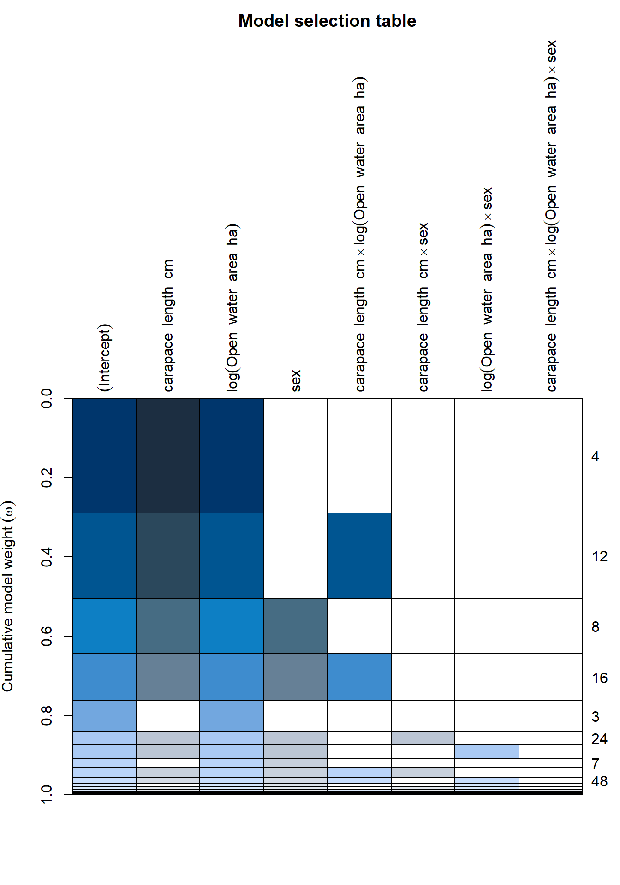
From this table, you can see that there 4 models with a \(\Delta\)AIC < 2, and they all include carapace length, log(Open Water) and #’s 3&4 have sex as well, with relatively few interactions.
Let’s check out the coefficients for the most complete of these
models. Here, it can be handy to use the tidy function in
the broom package, which extracts useful coefficients from
fitted models:
require(broom)
get.models(big_lm_dredge, 1:4) |> lapply(summary)## $`4`
##
## Call:
## lm(formula = log(THg_ppm) ~ carapace_length_cm + log(Open_water_area_ha) +
## 1, data = turtles_tidy, na.action = na.fail)
##
## Residuals:
## Min 1Q Median 3Q Max
## -2.7048 -0.6843 0.1221 0.7255 2.1918
##
## Coefficients:
## Estimate Std. Error t value Pr(>|t|)
## (Intercept) -0.41430 0.32076 -1.292 0.197686
## carapace_length_cm 0.02469 0.01141 2.164 0.031430 *
## log(Open_water_area_ha) 0.08705 0.02588 3.364 0.000889 ***
## ---
## Signif. codes: 0 '***' 0.001 '**' 0.01 '*' 0.05 '.' 0.1 ' ' 1
##
## Residual standard error: 0.9923 on 250 degrees of freedom
## Multiple R-squared: 0.07943, Adjusted R-squared: 0.07206
## F-statistic: 10.78 on 2 and 250 DF, p-value: 3.216e-05
##
##
## $`12`
##
## Call:
## lm(formula = log(THg_ppm) ~ carapace_length_cm + log(Open_water_area_ha) +
## carapace_length_cm:log(Open_water_area_ha) + 1, data = turtles_tidy,
## na.action = na.fail)
##
## Residuals:
## Min 1Q Median 3Q Max
## -2.6988 -0.6582 0.1389 0.7103 2.2599
##
## Coefficients:
## Estimate Std. Error t value
## (Intercept) -0.448798 0.321715 -1.395
## carapace_length_cm 0.025055 0.011403 2.197
## log(Open_water_area_ha) -0.076811 0.137450 -0.559
## carapace_length_cm:log(Open_water_area_ha) 0.005444 0.004485 1.214
## Pr(>|t|)
## (Intercept) 0.1643
## carapace_length_cm 0.0289 *
## log(Open_water_area_ha) 0.5768
## carapace_length_cm:log(Open_water_area_ha) 0.2260
## ---
## Signif. codes: 0 '***' 0.001 '**' 0.01 '*' 0.05 '.' 0.1 ' ' 1
##
## Residual standard error: 0.9914 on 249 degrees of freedom
## Multiple R-squared: 0.08484, Adjusted R-squared: 0.07381
## F-statistic: 7.695 on 3 and 249 DF, p-value: 6.16e-05
##
##
## $`8`
##
## Call:
## lm(formula = log(THg_ppm) ~ carapace_length_cm + log(Open_water_area_ha) +
## sex + 1, data = turtles_tidy, na.action = na.fail)
##
## Residuals:
## Min 1Q Median 3Q Max
## -2.6662 -0.6660 0.1003 0.7406 2.0912
##
## Coefficients:
## Estimate Std. Error t value Pr(>|t|)
## (Intercept) -0.54981 0.38623 -1.424 0.1558
## carapace_length_cm 0.03441 0.01457 2.362 0.0190 *
## log(Open_water_area_ha) 0.08546 0.02589 3.301 0.0011 **
## sexJ -0.06960 0.28482 -0.244 0.8072
## sexM -0.23929 0.14681 -1.630 0.1044
## ---
## Signif. codes: 0 '***' 0.001 '**' 0.01 '*' 0.05 '.' 0.1 ' ' 1
##
## Residual standard error: 0.991 on 248 degrees of freedom
## Multiple R-squared: 0.0893, Adjusted R-squared: 0.07461
## F-statistic: 6.079 on 4 and 248 DF, p-value: 0.0001108
##
##
## $`16`
##
## Call:
## lm(formula = log(THg_ppm) ~ carapace_length_cm + log(Open_water_area_ha) +
## sex + carapace_length_cm:log(Open_water_area_ha) + 1, data = turtles_tidy,
## na.action = na.fail)
##
## Residuals:
## Min 1Q Median 3Q Max
## -2.65269 -0.68815 0.09415 0.72577 2.18631
##
## Coefficients:
## Estimate Std. Error t value
## (Intercept) -0.544294 0.385682 -1.411
## carapace_length_cm 0.033499 0.014564 2.300
## log(Open_water_area_ha) -0.094794 0.139441 -0.680
## sexJ -0.140908 0.289525 -0.487
## sexM -0.244397 0.146642 -1.667
## carapace_length_cm:log(Open_water_area_ha) 0.005996 0.004558 1.315
## Pr(>|t|)
## (Intercept) 0.1594
## carapace_length_cm 0.0223 *
## log(Open_water_area_ha) 0.4973
## sexJ 0.6269
## sexM 0.0969 .
## carapace_length_cm:log(Open_water_area_ha) 0.1896
## ---
## Signif. codes: 0 '***' 0.001 '**' 0.01 '*' 0.05 '.' 0.1 ' ' 1
##
## Residual standard error: 0.9895 on 247 degrees of freedom
## Multiple R-squared: 0.09564, Adjusted R-squared: 0.07733
## F-statistic: 5.224 on 5 and 247 DF, p-value: 0.0001407Note that the R2 values are relatively low:
require(performance)
lapply(my_lms, r2)## $M0
## # R2 for Linear Regression
## R2: 0.000
## adj. R2: 0.000
##
## $M1
## # R2 for Linear Regression
## R2: 0.038
## adj. R2: 0.034
##
## $M2
## # R2 for Linear Regression
## R2: 0.079
## adj. R2: 0.072
##
## $M3
## # R2 for Linear Regression
## R2: 0.054
## adj. R2: 0.034
##
## $M4
## # R2 for Linear Regression
## R2: 0.049
## adj. R2: 0.038
##
## $M5
## # R2 for Linear Regression
## R2: 0.089
## adj. R2: 0.075
##
## $M6
## # R2 for Linear Regression
## R2: 0.098
## adj. R2: 0.068
##
## $M7
## # R2 for Linear Regression
## R2: 0.077
## adj. R2: 0.058All the lm models were weak. The low R2 values indicate that the predictors only explain a small percentage of variance in the models.
lm(log(THg_ppm) ~ carapace_length + log(Open_water_area), data = turtles) ##
## Call:
## lm(formula = log(THg_ppm) ~ carapace_length + log(Open_water_area),
## data = turtles)
##
## Coefficients:
## (Intercept) carapace_length log(Open_water_area)
## -1.216082 0.002469 0.087053lme4There are many packages that can fit straightforward linear mixed
effects models. The most commonly used ones are lme4 and
nlme. Other - “bigger guns” include glmmTMB
and brms. Each has different advantages & disadvantages
- mainly related to the allowable complexity of the models and speed
& technique of computation.
This dataset is pretty straightforward - and lme4 will
work just fine. You can read more about the package by checking out the
vignettes:
vignette("lmer")We’ll take care to specify our models with equations. THe “random intercept” model is written:
\[Y_{ij} = \alpha_i + \beta X_{ij} + \epsilon_ij\] Random intercept: \[\alpha_i \sim {\cal N}(\mu_{\alpha}, \sigma_\alpha^2)\]
Residual variation: \[\epsilon_i \sim {\cal N}(0, \sigma_r^2)\]
We specify that random intercept via: (1|Site):
require(lme4)
lmer(log(THg_ppm) ~ carapace_length_cm + (1|Site),
data = turtles) |> summary()## Linear mixed model fit by REML ['lmerMod']
## Formula: log(THg_ppm) ~ carapace_length_cm + (1 | Site)
## Data: turtles
##
## REML criterion at convergence: 534.4
##
## Scaled residuals:
## Min 1Q Median 3Q Max
## -2.2905 -0.4561 -0.0103 0.4317 3.3156
##
## Random effects:
## Groups Name Variance Std.Dev.
## Site (Intercept) 0.6705 0.8188
## Residual 0.2389 0.4888
## Number of obs: 253, groups: Site, 81
##
## Fixed effects:
## Estimate Std. Error t value
## (Intercept) 0.004674 0.220421 0.021
## carapace_length_cm 0.018137 0.007113 2.550
##
## Correlation of Fixed Effects:
## (Intr)
## crpc_lngth_ -0.895How do we interpret these results?
Q. Is the main effect of carapace length significant?
There are complicated statistical reasons why it is hard to
test whether you need a random effect - lots of
confusing Stack Exchange treads on the topic. But the
RLRsim (co-authored by Ben Bolker) package provides a very
straightforward test of just that!
require(RLRsim)
turtle_lme1 <- lmer(log(THg_ppm) ~ carapace_length_cm +
(1|Site), data = turtles)
turtle_lm <- lm(log(THg_ppm) ~ carapace_length_cm, data = turtles)
exactLRT(turtle_lme1, turtle_lm)##
## simulated finite sample distribution of LRT. (p-value based on 10000
## simulated values)
##
## data:
## LRT = 198.77, p-value < 2.2e-16The random slope model looks like this:
\[Y_{ij} = \alpha_i + \beta_i X_{ij} + \epsilon_ij\] \[\alpha_i \sim {\cal N}(\mu_\alpha, \sigma_\alpha^2)\] \[\beta_i \sim {\cal N}(\mu_\beta, \sigma_\beta^2)\] \[\epsilon_i \sim {\cal N}(0, \sigma_r^2)\]
The vertical line again indicates that carapace length will be modeled with a random slope:
lmer(log(THg_ppm) ~ carapace_length_cm + (carapace_length_cm|Site),
data = turtles) |> summary()## Linear mixed model fit by REML ['lmerMod']
## Formula: log(THg_ppm) ~ carapace_length_cm + (carapace_length_cm | Site)
## Data: turtles
##
## REML criterion at convergence: 533.5
##
## Scaled residuals:
## Min 1Q Median 3Q Max
## -2.3482 -0.4489 -0.0152 0.4133 3.3544
##
## Random effects:
## Groups Name Variance Std.Dev. Corr
## Site (Intercept) 0.6983587 0.8357
## carapace_length_cm 0.0003385 0.0184 -0.34
## Residual 0.2307528 0.4804
## Number of obs: 253, groups: Site, 81
##
## Fixed effects:
## Estimate Std. Error t value
## (Intercept) 0.007743 0.225543 0.034
## carapace_length_cm 0.018031 0.007584 2.378
##
## Correlation of Fixed Effects:
## (Intr)
## crpc_lngth_ -0.901
## optimizer (nloptwrap) convergence code: 0 (OK)
## Model failed to converge with max|grad| = 0.0604277 (tol = 0.002, component 1)EXERCISE: How many parameters were estimated for this model? What are they? Did the random slope model change the significance of the main effect?
You have to use full Maximum Likelihood (ML) not Restricted Maximum Likelihood (REML) when comparing models:
https://r.qcbs.ca/workshop07/book-en/step-2.-code-potential-models-and-model-selection.html
f1 <- log(THg_ppm) ~ carapace_length + (1|Site)
f2 <- log(THg_ppm) ~ carapace_length + (carapace_length|Site)
fit1 <- lmer(f1, data = turtles, REML = FALSE)
fit2 <- lmer(f2, data = turtles, REML = FALSE)
AIC(fit1, fit2)## df AIC
## fit1 4 531.5100
## fit2 6 535.2154Start with most complex model. Dredge will fit the original, most complex model and then break it down into more simple models and fit those as well.
t <- turtles[,c("THg_ppm", "carapace_length_cm",
"Open_water_area_ha", "sex",
"Site", "Waterbody_Type")] |>
mutate(
Carapace = carapace_length_cm/100,
OpenWater = Open_water_area_ha/100) |>
subset(sex != "J") |>
na.omit()
big_lmer <- lmer(log(THg_ppm) ~ (Carapace * log(OpenWater) * sex) +
(1|Site) +
(1|Waterbody_Type), data = t,
na.action = na.fail, REML = FALSE)
require(MuMIn)
lmer_dredge <- dredge(big_lmer)require(rmarkdown)
plot(lmer_dredge)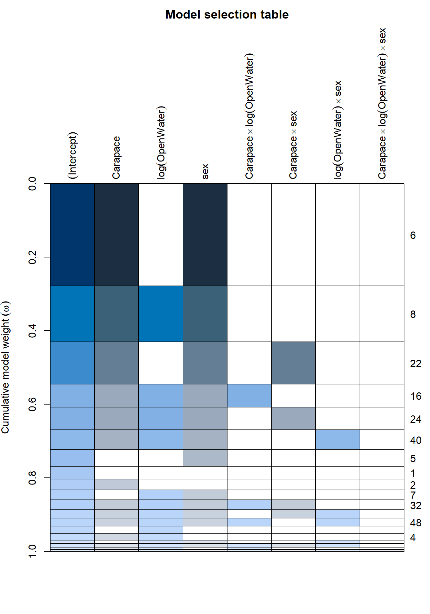
paged_table(lmer_dredge)The model selection table indicates which model is the best fit for the data. The best fit model has a carapace length and sex interaction.
get.models(lmer_dredge, 1)[[1]] |> summary()## Linear mixed model fit by maximum likelihood ['lmerMod']
## Formula: log(THg_ppm) ~ Carapace + sex + (1 | Site) + (1 | Waterbody_Type)
## Data: t
##
## AIC BIC logLik deviance df.resid
## 477.5 498.3 -232.8 465.5 230
##
## Scaled residuals:
## Min 1Q Median 3Q Max
## -2.13331 -0.48372 -0.01815 0.49858 3.11003
##
## Random effects:
## Groups Name Variance Std.Dev.
## Site (Intercept) 0.3942 0.6279
## Waterbody_Type (Intercept) 0.3513 0.5927
## Residual 0.2306 0.4802
## Number of obs: 236, groups: Site, 79; Waterbody_Type, 5
##
## Fixed effects:
## Estimate Std. Error t value
## (Intercept) 0.15072 0.37545 0.401
## Carapace 2.17931 0.90331 2.413
## sexM -0.22098 0.08548 -2.585
##
## Correlation of Fixed Effects:
## (Intr) Carapc
## Carapace -0.638
## sexM 0.193 -0.470All the fixed predictors were weak and do not appear to be significant when waterbody type and site were used as random effects in the model. The strongest predictor of Hg concentration appears to be carapace length.
Helpful link for interpreting LMER output: http://bayes.acs.unt.edu:8083/BayesContent/class/Jon/Benchmarks/LinearMixedModels_JDS_Dec2010.pdf
performance packagerequire(performance)
get.models(lmer_dredge, 1:5) |> lapply(r2)## $`6`
## # R2 for Mixed Models
##
## Conditional R2: 0.767
## Marginal R2: 0.013
##
## $`8`
## # R2 for Mixed Models
##
## Conditional R2: 0.743
## Marginal R2: 0.038
##
## $`22`
## # R2 for Mixed Models
##
## Conditional R2: 0.769
## Marginal R2: 0.013
##
## $`16`
## # R2 for Mixed Models
##
## Conditional R2: 0.741
## Marginal R2: 0.044
##
## $`24`
## # R2 for Mixed Models
##
## Conditional R2: 0.746
## Marginal R2: 0.038bestmodel <- get.models(lmer_dredge, 1)[[1]]Lots of fascinating helper functions:
check_predictions(bestmodel)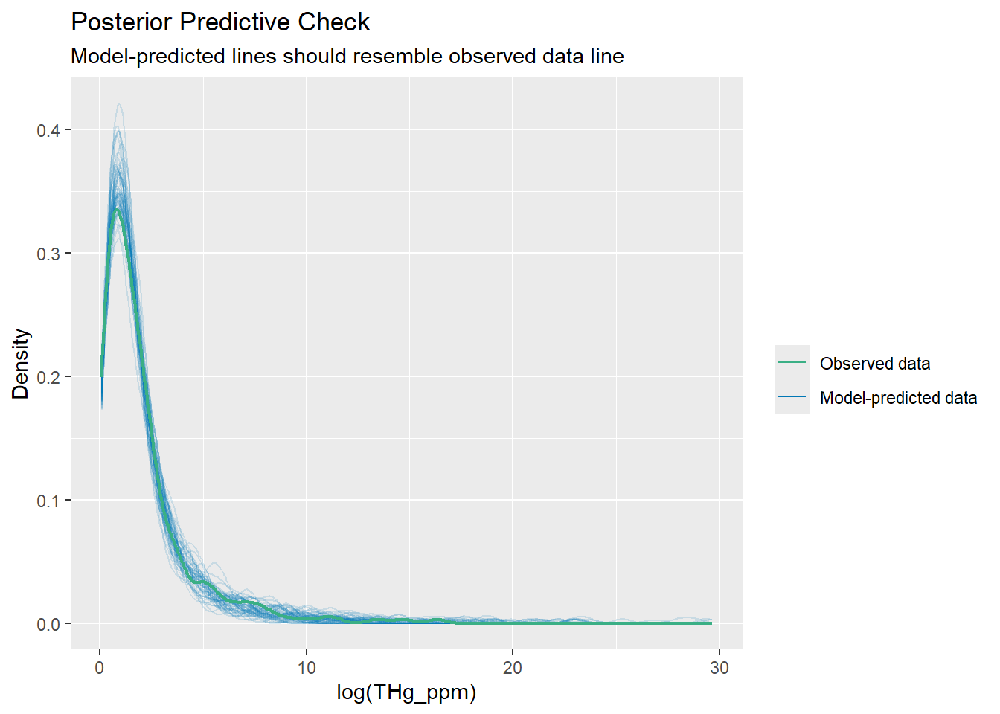
check_collinearity(bestmodel) |> plot()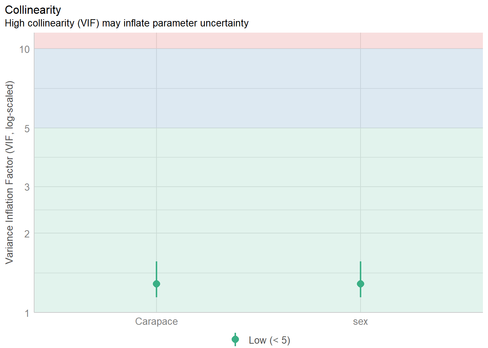
check_distribution(bestmodel) |> plot()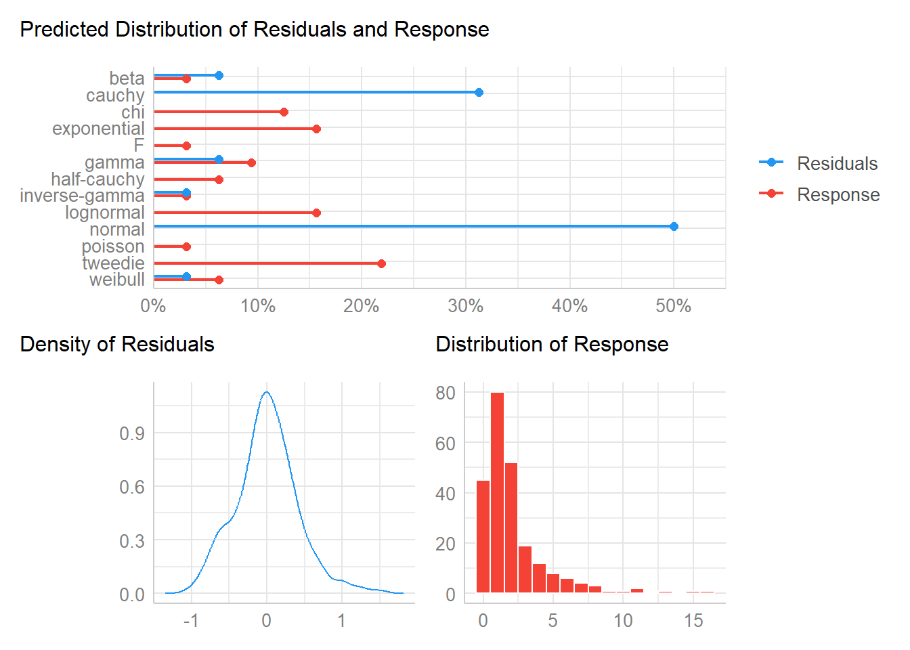
check_residuals(bestmodel) |> plot()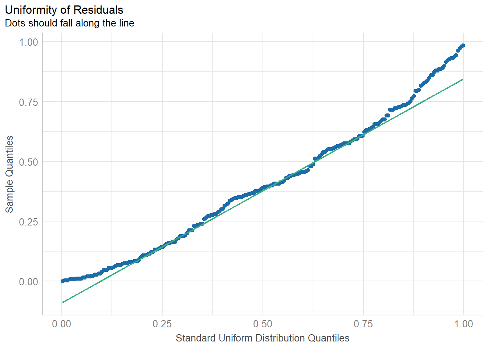
compare_performance(bestmodel, get.models(lmer_dredge, 2)[[1]]) |> plot()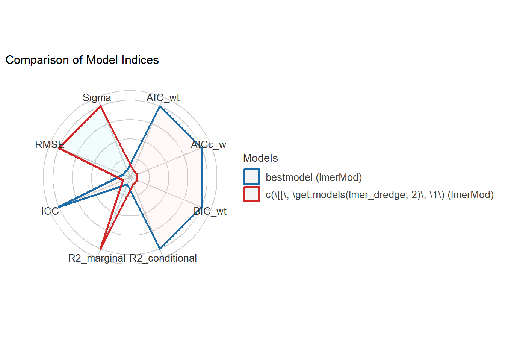